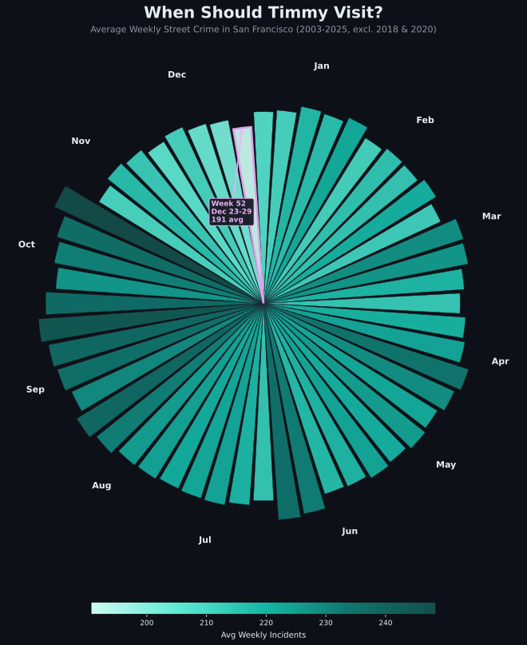

A Data Story
Using 22 years of crime data to find the safest week, district, and time of day to explore the city
Timmy has a time machine. It can send him anywhere on Earth, but there's a catch: it only reaches back 23 years, landing him somewhere between 2003 and today. Naturally, Timmy wants to visit San Francisco, but he's heard the city has a bit of a street safety problem.
Being a careful time traveler, Timmy does his homework. He finds a public dataset from the San Francisco Police Department containing every recorded police incident from January 2003 through early 2026, totaling over 1.7 million reports.
The data merges two official sources: the Historical Incident Dataset (2003–2017) and the Current Incident Dataset (2018–present), unified into consistent categories. Timmy focuses on four crime types most relevant to someone walking around a city:
One data quirk worth noting: the historical dataset labels sexual violence as Rape, the current one as Sex Offense — same crime, different name. Timmy merges them into one category. He also excludes 2018 (the dataset merge year) and 2020 (COVID anomaly). That leaves 21 years of clean data and 240,670 street-safety incidents.
Timmy has three questions, and he'll answer them one at a time.

Timmy's first question: which week of the year is the safest? He pulls together four crime types — Assault, Robbery, Sexual Violence, and Arson — and weights each by how serious it is before adding them up. No smoke and mirrors, just a single honest number for every week.
The chart has a clear shape. Risk climbs through spring, peaks in late summer and early autumn (weeks 35–44, roughly August through October), then falls steadily as the year winds down. Warmer weather pulls more people onto the streets — and, apparently, more trouble too.
The low point is unmistakable: Week 52, Christmas week. Its risk index is the lowest of all 52 weeks, about 24% below the autumn peak. Weeks 50, 51, and 1 (New Year's) are nearly as calm.
Timmy has his answer: he's aiming for Christmas-week San Francisco.
Timmy has picked his week. Now he needs to book a hotel. San Francisco is divided into 10 police districts, each with a very different safety profile. Which one should he choose?
The colour contrast is hard to miss. Southern and Mission — downtown, SoMa, the Mission corridor — sit deep in the red, scoring in the 90s. There's a sharp drop once you cross into the city's western neighbourhoods: Taraval scores just 11, and the top two sit well clear of everything else.
The winner is the Richmond district, foggy northwest corner of the city, right along the edge of Golden Gate Park. Danger score: 0 out of 100 — the calmest district in SF during Christmas week by every measure in the data.
Timmy books his hotel on Clement Street and starts planning his daily itinerary.
Timmy's in the Richmond during Christmas week. But even the safest district isn't equally safe at every hour. When should he be out and about?
A caveat up front: with only about 7 incidents per year in this district during this week, the hourly breakdown is noisy. Individual spikes (like at noon) may be statistical artifacts rather than real patterns. Assault dominates at every hour.
That said, two things do stand out. Incidents drop to near zero between 3–7 AM, and they cluster most heavily in the late evening and around midnight (10 PM–2 AM), when robbery in particular picks up.
Timmy's takeaway: the Richmond during Christmas week is already very safe by any measure. But if he wants to be extra cautious, he should avoid walking alone late at night.
Of course, this analysis comes with caveats. Crime reports don't equal crime. They reflect where and when police are active, not necessarily where incidents actually occur. The Richmond's low numbers partly reflect lower police presence and reporting rates, not just genuine safety. And aggregating 21 years smooths over real changes in neighborhoods and policing strategies.
Still, for a time traveler with limited options, the data paints a clear picture: if you must visit San Francisco and safety is your priority, Christmas week in the Richmond is your best bet.
Built for the Social Data Analysis course at DTU, Spring 2026. Data spans January 2003 through December 2025. Analysis excludes 2018 (dataset merge) and 2020 (COVID anomaly).